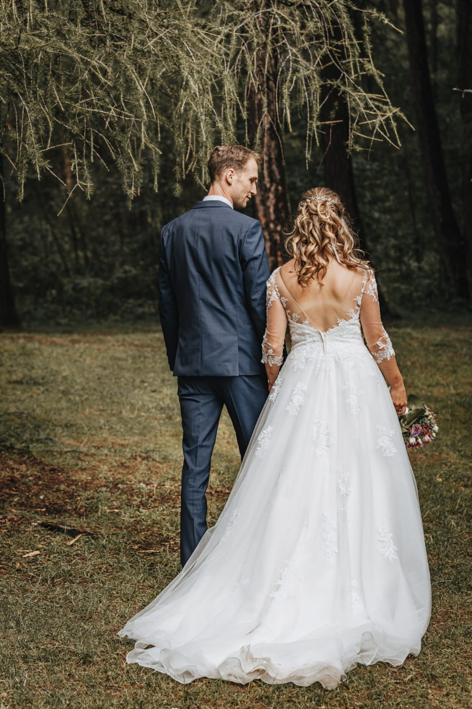
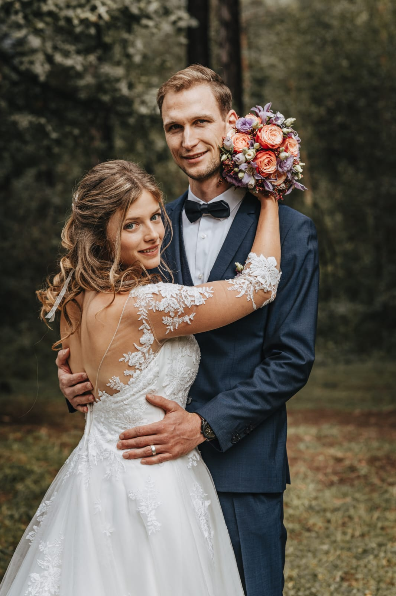

Harmony in Image and Sound

Our Wedding Video Experience
Creating a wedding video for a charming couple provided us with a unique opportunity to expand our videography skills while studying. Capturing heartfelt moments and lifelong memories in a film was our central focus.
The challenge lay in capturing the emotions and special moments of the day while filming in front of a large group of guests. The use of two different cameras resulted in differences in image quality and color grading, making post-production more demanding.
The end result, a 12-minute video brimming with love and joy, surpassed the couple’s expectations and became a cherished memento of their special day.


Here is the link to video:
https://drive.google.com/file/d/1NG35RI-_4s94jwgDH77OVMSxE72c341F/view?usp=drive_linkAs it is a personal memory of the wedding, it will not be publicly shared. However, if you are interested, you have the option to request access.